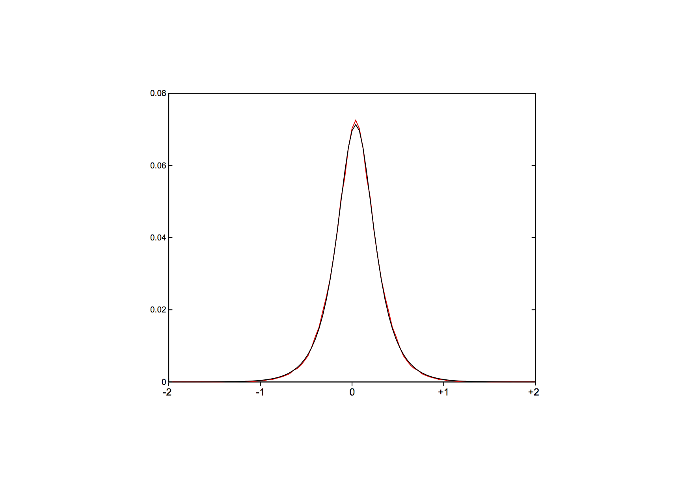

How to run MOOSE2
Building the software.
MOOSE2 is written in C++ and compiles and runs on Linux
and MacOS X and requires the gcc compiler. On the Mac, you will need
to install XCode on later OS version to get gcc.
On the command line, type
> make
to build the executables. To test whether the build was successful,
run
> ./test_it
to run the software on data that comes with the repository. Note any
errors.
Input files/summary
MOOSE2 requires two files:
1. Expression values: these can either be raw read counts or
normalized data, listed in a single file, one line per gene or
transcript, e.g.:
Gene
ex1 ex2
ex3 ex7
ex9 ex8
ex4 ex5 ex6
abgT.t01 49.6757
48.1321 34.522 33.4765 40.3088 49.9477 40.4558 53.1916
42.0341 1527
abrB.t01 51.072
47.2778 29.0407 30.6346 33.9294 36.2579 39.7088 45.3439 42.7197
1047
...
Where the first line serves as a header naming the samples. If
possible, also provide the transcript length in one of the columns,
e.g. the last one. Columns listing expression values have to be
contiguous.
2. Replicate description: this is an optional text file that
specifies which samples are replicates, one line per replicate,
preceded by an experiment name, e.g:
healthy ex1
ex2 ex3
sick ex7 ex8 ex9
recovered ex4 ex5 ex6
Additional/optional files are: a set of known reference gene (one
entry per line).
Running the program
On the command line, type
./Normalize -r <replicates> -i <fpkm_data> -f <first
column containing fpkm data> -l <last column containing fpkm
data> -w <list of reference genes> -col <length
column> -a <average read or fragment count over all
samples>
IMPORTANT: If using read counts instead of FPKM/RPKM values, add the
option -counts.
************** NOTE: column indices are 0-based!!
****************
with the available arguments:
-i<string> : input file (all expression values)
-r<string> : replicates file (def=, one line per
experiment, name followed by sample ids)
-counts<bool> : process read COUNTS, not FPKMs
(def=0)
-a<string> : average read counts per sample (def=0,
needed for correcting significance for lowly expressed
trsnacripts)
-col<string> : column that specifies the transcript
length (def=0, needed if RPKM/FPKM values are specified to
estimate counts)
-w<string> : waypoint gene file (def=, one gene per
line)
-f<string> : first column with data (0-based)
(def=1)
-l<string> : last column with data (0-based) (def=0)
-p<string> : penalty for HMM (decrease to get more
genes) (def=) /* this is the HMM parameter h,
which defaults to 5. */
-rw<string> : reward to pick up genes (def=) /* this
is the HMM parameter m, which defaults
to 4. */
-linear<bool> : uses a linear model (def=0)
-force<bool> : forces a polynomial fit (not
recommended) (def=0)
The parameter -i specifies the input matrix with (a) a header
providing the sample description; (b) a row per gene or isoform
specifying either read or pair counts, or FPKM/RPKM normalized
values, where the first element specifies the gene name or
identifier.
Data can be provided in any consecutive set of columns, which need
to be specified via the -f (first column containing expression
values) and -l (last column containing expression values)
parameters, e.g. a file with 9 samples, in columns 1 through 9:
gene
BB9 BB10 BB17 BB19 BB20 BB21 BB11 BB12 BB18 average
aaeA.t01 45.6132
57.7381 35.4817 71.4413 75.5846 59.6099 93.7032 78.2685 75.4577
933 65.8776
aaeB.t01 48.4527
42.2968 41.1391 44.0555 47.6292 51.5953 56.3065 69.1718 58.5695
1968 51.024
is provided via -f 1 -l 9. If the transcript or gene lengths is part
of this file, optionally specify via the -col option (this is for QA
only, as are the -counts and -a options).
A replicate file, which is required for QA only, can be specified in
the format:
condition1 sampleA sampleB sampleC
condition2 sampleD sampleE
where each line specifies one condition, followed by the samples
obtained from that condition.
A waypoint file containing confirmed invariant genes can be provided
via the -w option as a file containing one gene name per line. Note
that the gene names have to match exactly the names or ids in the
data file.
For an example, see the script ./test_it that comes with the
repository.
Output files.
MOOSE2 produces several output files:
1. hmm_out: the set of genes assumed to be invariant in expression.
2. normalized.out: the normalized expression values
3. distribution.txt: the distribution parameters and values or
within replicate comparisons for quality assurance purposes
Controlling the number of in silico invariant genes.
The number of invariant gene predictions depends on a number of
factors, including the number of samples, number of genes etc. To
increase the number of genes, increase the HMM reward m (-p option,
default=5) and/or decrease the HMM penalty h (-rw option,
default=4). In the example data, the default setting produce 33
predictions, -m 6 -h 3 results in 53 predictions etc.
Quality assessment (optional)
For quality assessment, the file distribution.txt contains both the
observed distribution, as well as the fitted model. If you visualize
both (note that the first line in the file contains the parameters,
the rest lists: position, observed, fitted), you should see a
distribution like this one (red = observed, black = model):

where both follow each other very closely. A discrepancy might be
indicative of an experimental problem.